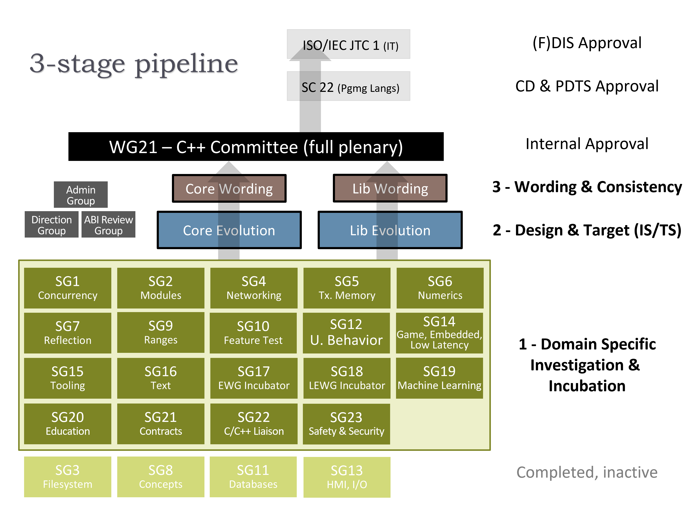

The Committee: WG21
The ISO C艹 committee is called WG21, officially ISO/IEC JTC1 (Joint Technical Committee 1) / SC22 (Subcommittee 22) / WG21 (Working Group 21). WG21 was formed in 1990-91, and consists of accredited experts from member nations of ISO/IEC JTC1/SC22 who are interested in C艹 work.
For a partial list of current and past members, see the WG21 Members page of the FAQ wiki.
 The WG21 officers are:
The WG21 officers are:
- Convener: Herb Sutter (Microsoft). The convener determines consensus, chairs the WG, sets the WG meeting schedule ("convenes" meetings), appoints Study Groups, and is responsible to higher levels of ISO (SC22, JTC1, and ITTF) for the WG's work.
- Vice-Convener: John Spicer (Edison Design Group). By tradition since the start of WG21, the convener delegates the chairing of WG21 plenary sessions to the chair of the U.S. national panel, who also shares other administrative workloads and informally acts as a vice-convener (as do other SCs and WGs in JTC1). As of 2024, JTC1 is considering making 'vice-convener' an official role for all WGs.
- Secretary: Nina Ranns. The secretary is responsible for taking and distributing minutes of WG21 meetings.
In addition, the following roles are essential to running or organization and meetings:
- Project Editors: Thomas Köppe (Google), Michael Wong (CodePlay). The project editors are the persons ultimately responsible for applying committee-approved changes to drafts of the standard and technical specifications, currently .
- Meeting Logistics: Jens Maurer. The logistics officer is responsible for working with the local host to ensure that each meeting's local arrangements are suitable for the committee's needs for that meeting, from the number/size/times of meeting room space to food and beverage arrangements.
- Email Lists: Detlef Vollmann (Vollmann Engineering). The mailing list officer is responsible for helping people join and manage their membership in the committee's internal email lists, and related setup and maintenance.
At most meetings, we typically have experts officially representing over 20 national bodies. Recently attending nations include Austria, Bulgaria, Canada, China, Czech Republic, Denmark, Finland, France, Germany, Ireland, Israel, Italy, Japan, Kazakhstan, Republic of Korea, Netherlands, Norway, Poland, Portugal, Romania, Russia, Slovakia, Spain, Sweden, Switzerland, United Kingdom, and United States.
Subgroups and Study Groups
The committee is organized into a three-stage pipeline consisting of several subgroups, each run by the indicated chairperson. Note "SG" stands for "Study Group."
The Direction and ABI subgroups are advisory groups for advising, respectively, on evolution direction and on the ABI impact of particular proposals:
- Admin Group, aka AG: Nevin Liber (Argonne National Laboratory).
- Direction Group, aka DG: Rotating chair. 2024 chair: Howard Hinnant.
- ABI Review Group, aka ARG: Daveed Vandevoorde (Edison Design Group), assistant chair Jason Merrill (IBM).
Stage 3 (Wording and Consistency) has two groups:
- Core Language Wording, aka CWG: Jens Maurer, assistant chairs Jason Merrill (IBM), Jonathan Caves (Microsoft).
- Library Wording, aka LWG: Jonathan Wakely (IBM), assistant chairs Jeff Garland (CrystalClear Software), Dietmar Kuehl (Bloomberg).
CWG and LWG are responsible for the maintenance of the "standardese" specification wording and consistency of change proposals from the design groups and SGs.
Stage 2 (Design and Target) has two groups broken down the same way:
- Core Language Evolution, aka EWG: JF Bastien (Woven by Toyota), assistant chairs Hana Dusíková (Woven by Toyota) and Erich Keane (NVIDIA).
- Library Evolution, aka LEWG: Inbal Levi (Millennium Management), assistant chairs Fabio Fracassi (CODE University of Applied Sciences), and Ben Craig (Raven).
EWG and LEWG are responsible for new features that involve language and standard library extensions, respectively. In addition to the extensions each group works on directly, they review the style of work produced by language and library extensions developed in a domain-specific SG. They also recommend the target vehicle (International Standard or Techical Specification) where each new feature should be included.
Stage 1 (Domain Specific Investigation and Incubation) consists of Study Groups (SGs) who meet as breakouts during full WG21 face-to-face meetings, and can also meet independently between meetings either face-to-face or by telecon. The work of the SGs is eventually reviewed by the appropriate central groups, which helps to ensure consistency. For example, library features like networking features have their domain-specific design done within their SG, their library design reviewed by LEWG, and their library specification wording reviewed by LWG.
The domain-specific Study Groups are as follows.
Note: Those marked "*" are currently dormant -- proposals have progressed to core groups, and the SG might be reactivated in the future if we receive new papers in the subject area.
- SG1, Concurrency: Olivier Giroux (Apple), assistant chair Hans Boehm (Google). Concurrency and parallelism topics, including the concurrency memory model and the related clauses of the standard.
- * SG2, Modules.
- * SG3, File System.
- SG4, Networking: Jeff Snyder (PDT Partners), assistant chair Gašper Ažman (Citadel Securities). Networking library development beyond the Networking TS for potential inclusion into the standard.
- * SG5, Transactional Memory.
- SG6, Numerics: Matthias Kretz (GSI Helmholtz Centre for Heavy Ion Research), assistant chairs Lisa Lippincott (Tanium) and John McFarlane (Jaguar Land Rover). Numerics topics, including but not limited to fixed point, decimal floating point, and fractions.
- SG7, Compile-time programming: Hana Dusíková (Woven by Toyota), assistant chair Daveed Vandevoorde (EDG). Initially focused on compile-time reflection capabilities, then expanded to compile-time programming in general.
- * SG8, Concepts.
- SG9, Ranges: Daisy Hollman (Google), Jonathan Müller (think-cell). Range-related improvements to the standard library.
- SG10, Feature Test: Barry Revzin (Jump Trading), assistant chair Jonathan Wakely (IBM). Means for portable code to check whether a particular C艹 product implements a feature yet, as we continue to extend the standard.
- * SG11, Databases. Database-related library interfaces.
- * SG12, Undefined and Unspecified Behavior.
- * SG13, HMI & I/O (Human/Machine Interface). Selected low-level output (e.g., graphics, audio) and input (e.g., keyboard, pointing) I/O primitives.
- SG14, Game Development & Low Latency: Michael Wong (Codeplay). Topics of interest to game developers and (other) low-latency programming requirements.
- SG15, Tooling: Michael Spencer (Apple), assistant chair Ben Boeckel (Kitware). Topics related to creation of developer tools for standard C艹, including but not limited to modules and package management.
- SG16, Unicode: Tom Honermann (Intel), assistant chair Steve Downey (Bloomberg). Topics related to Unicode text processing in C艹. See GitHub SG16 introduction page.
- SG17, EWG Incubator: Erich Keane (NVIDIA), James Touton. A pipeline stage in front of EWG for language proposals that aren't yet ready for EWG or that EWG does not yet have bandwidth to consider.
- SG18, LEWG Incubator: Billy Baker (NVIDIA), assistant chair Nevin Liber (Argonne National Laboratory). A pipeline stage in front of LEWG for library proposals that aren't yet ready for LEWG or that LEWG does not yet have bandwidth to consider.
- SG19, Machine Learning: Michael Wong (Codeplay), assistant chair Vincent Reverdy (Paris Observatory/NCSA). Address and improve on C艹’s ability to support fast iteration, better support for array, matrix, linear algebra, in memory passing of data for computation, scaling, and graphing, as well as optimization for graph programming.
- SG20, Education: JC van Winkel, assistant chair Florian Sattler. Produce guidance for modern course materials for C艹 education.
- SG21, Contracts: John Spicer (Edison Design Group), assistant chair Timur Doumler (JetBrains). Discussion related to contract programming for checking, documentation, analysis, and other purposes.
- SG22, WG21/WG14 C/C艹 Liaison: Nina Ranns (WG21) and JeanHeyd Meneide (WG14, Netherlands), assistant chair Davis Herring (Los Alamos National Lab). Discussion of C and C艹 liaision and coordination.
- SG23, Safety and Security: Roger Orr (BSI), assistant chair Ben Craig (Raven). Discussion of safety and security related issues in the language and standard library, including but not limited to type and memory safety and vulnerabilities/exploits.